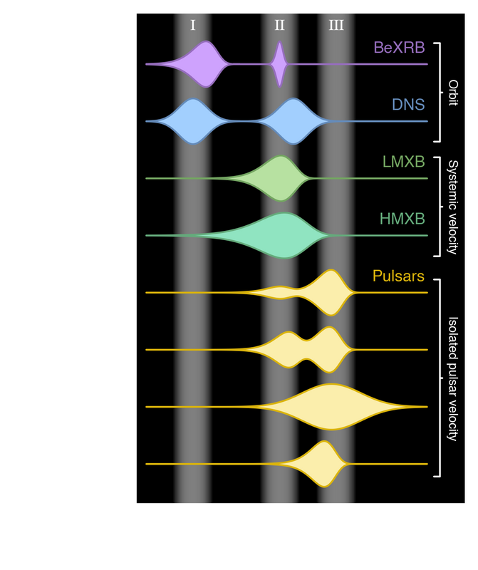
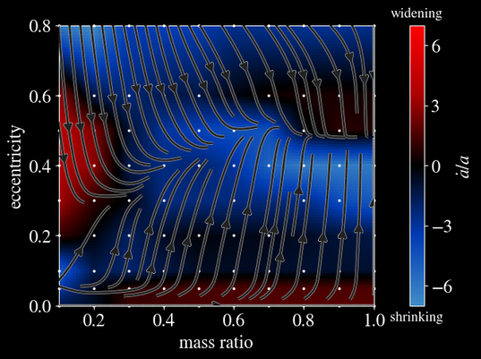
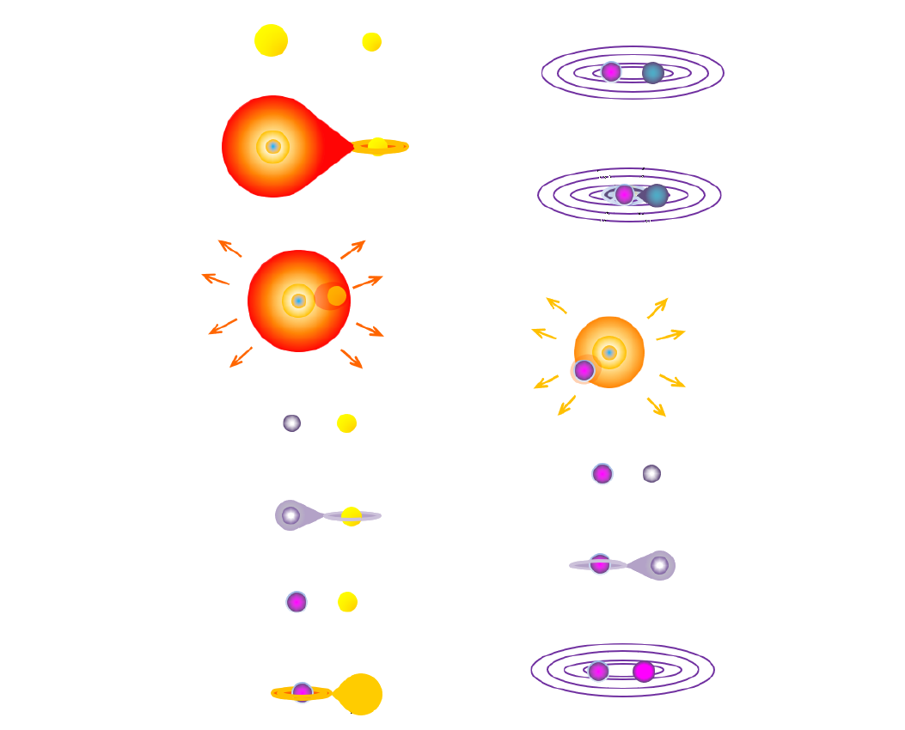

Research
I study the lives and deaths of massive stars, with a focus on how binary interactions shape their evolution and final fates.
Three modes of supernova kicks? Who ordered that?
When neutron stars are born, they are kicked out of the explosion site with a high velocity. We discovered that not all velocities are equally likely: there are instead three specific possibilities, or modes. Why these? Why three? The neutron stars we reached out to did not immediately respond for comments.
Valli et al. 2025 — Evidence of polar and ultralow supernova kicks from the orbits of Be X-ray binaries — arXiv:2505.08857

To shrink or not to shrink ─ what circumbinary disks to do the binary
What happens to a binary system surrounded by gas? Accretion from a circubminary disk of gas can alter the orbit in many ways, pumping the eccentricity towards an equilibrium, widening the orbit or shrinking it and facilitating a merger.
Valli, et al. 2024 — Long-term evolution of binary orbits induced by circumbinary disks — A&A, Vol. 688, id.A128, 18 pp.

Binary population synthesis: many codes, one common format
A new binary population synthesis code is created every few years. They all solve the same problem: compute what happens to a binary star, from birth to death. But they couldn't be more different, regarding which processes they decide to implement, how they model them and what physical choices they make. Moreover, each code has its custom output format, which makes systematic comparisons difficult. For this reasons, we defined the BinCodex specifications: a common output format that is now implemented by the majority of population synthesis codes.
Valli, et al. 2023 — BinCodex: a common output format for binary population synthesis — arXiv:2311.03431

Adapted from Amaro-Seoane et al. 2022